8天让iOS开发者上手Flutter之七
上一篇文章我们已经完成首页聊天页面的导航条和列表展示，今天的任务是完成搜索 cell 的展示和点击之后的搜索页面的功能。
自定义 SearchCell
新建 search_cell.dart 文件
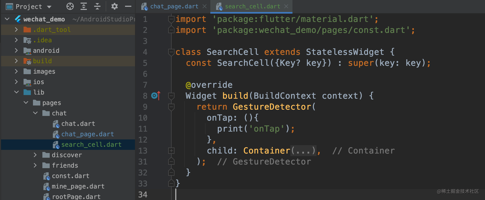
实现 SearchCell 代码
SearchCell 的话，因为仅仅只是展示，点击之后就进入搜索页了，应该来说是不需要状态的，所以用一个 StatelessWidget 就够了。然后布局的方式使用一个 Container 包含一个 Row，Row 里面包一个图片和文本就可以了。布局的方式其实多种多样，能实现就好了。完整代码如下：
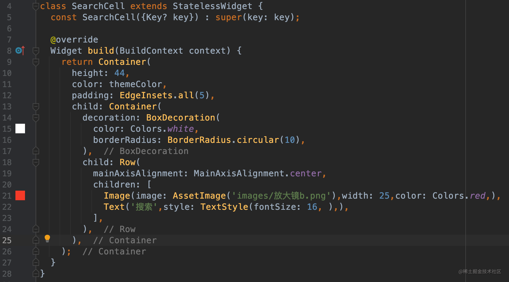
一个有意思的地方是，flutter 里面的 Image 居然可以设置颜色，而且颜色是设置给图片的。比如我的放大镜图片原本是黑色的，设置红色之后，居然真的变红色了！！！

使用 SearchCell
SearchCell 的展示就算写完了，然后在 ChatPage.dart 中使用，我们把 ListView 的 itemBuilder 方法抽取出来，然后因为我们多加了一个 SearchCell，所以 itemCount 需要加 1，然后取 _chatList 数据的时候也要处理一下下标。
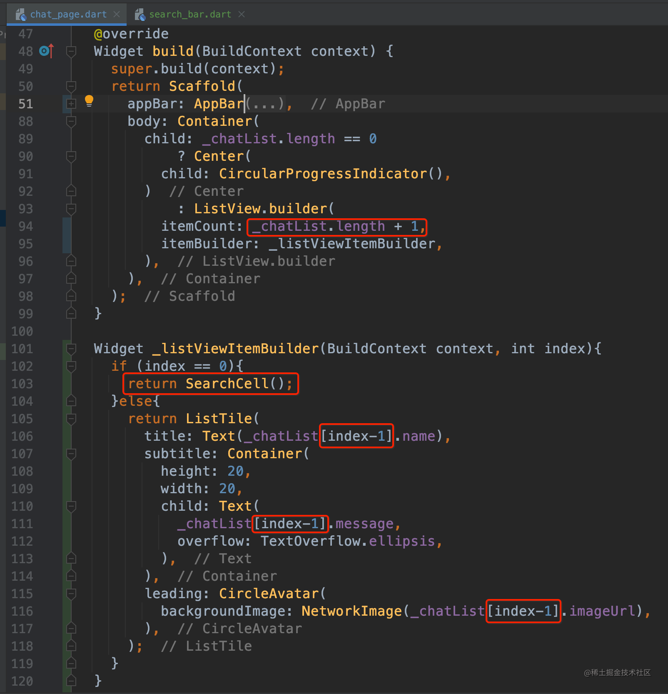
自定义 SearchPage
新建 search_page.dart 文件
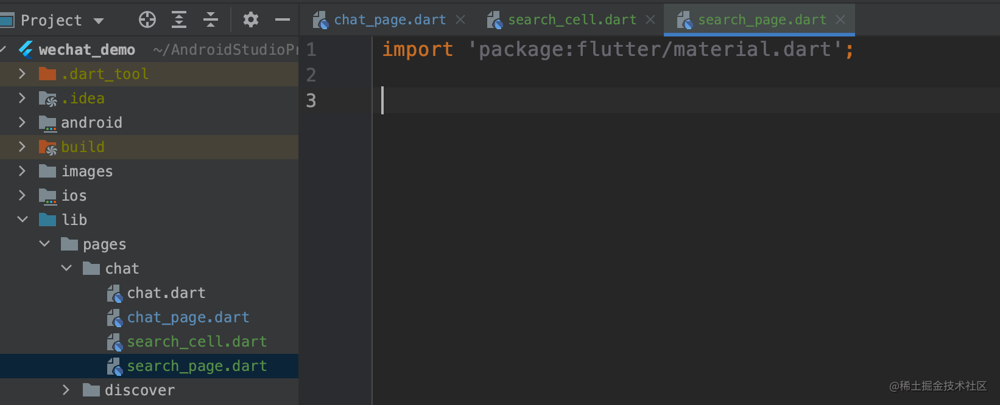
简单实现 SearchPage
SearchPage 作为一个页面，使用 StatelessWidget 肯定是无法胜任的，所以使用一个 StatefulWidget。而由于 AppBar 的样式和我们需要显示的效果图还是有差别的，所以这里我们不使用 Scaffold 提供的 AppBar 了。我们自定义一个 SearchBar，配合一个 ListView 来搭建基本的布局。这里面基本没有新鲜的东西，就简单贴一下代码：
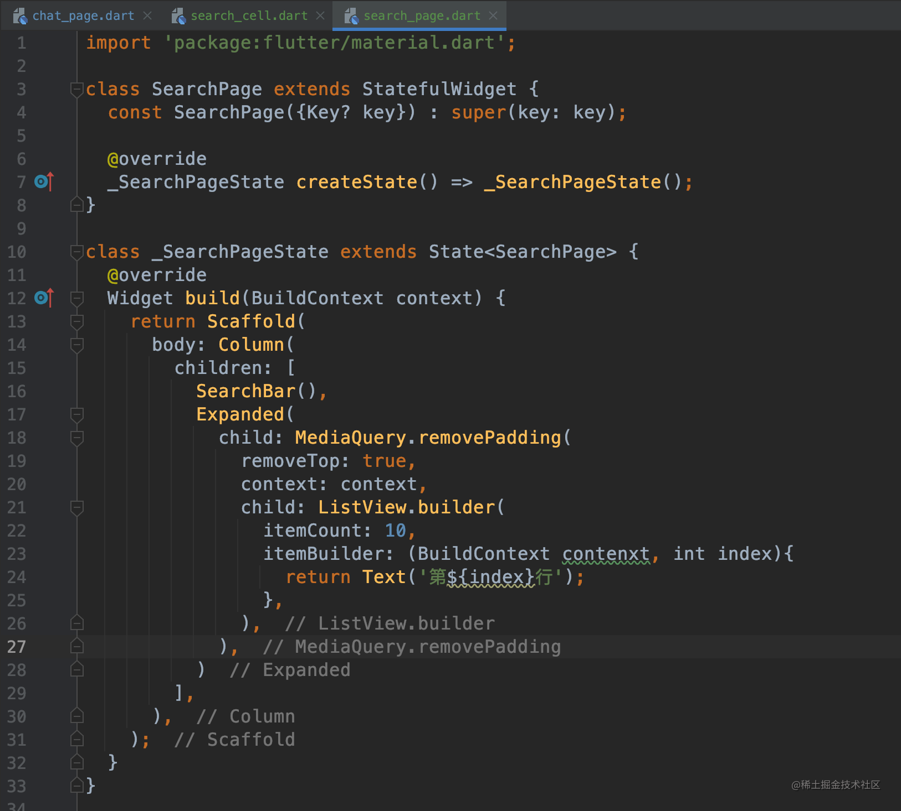
SearchBar 由于是在 SearchPage 中使用的，所以就直接定义在 SearchPage 中了，代码也是先简单定义如下：
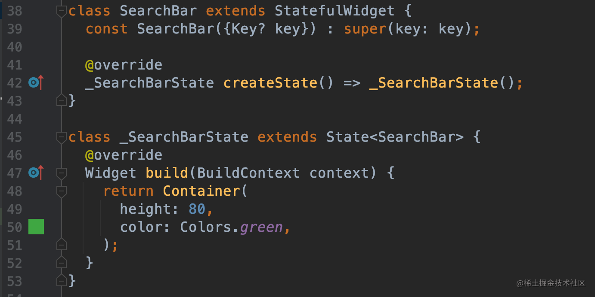
点击跳转到 SearchPage
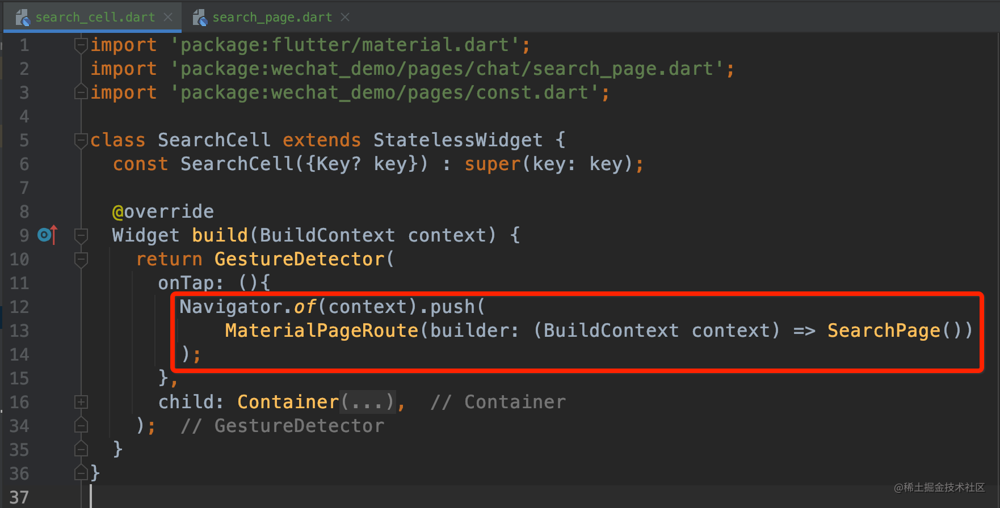
在搜索 cell 里面实现点击方法，然后跳转到 SearchPage，显示效果如图：
实现 SearchBar
SearchBar 的布局
SearchBar 的布局，最外层分为上下两个部分，上面的部分是系统状态栏的高度。下面的部分就是显示搜索条的高度。而搜索条的布局，使用 Row 分隔为左右两个部分，左侧包含放大镜，文本输入框和删除图片。右侧就是一个返回上级页面的取消。这里主要提一下 flutter 中的文本框，跟 iOS 中 UITextField 真的很不一样，UITextField 中左侧的图标，右侧的删除，都是封装在内部的。而在 flutter 中，文本框 TextField 真的就只有文本框，没有其他的东西，都需要自己添加。完整代码如下：
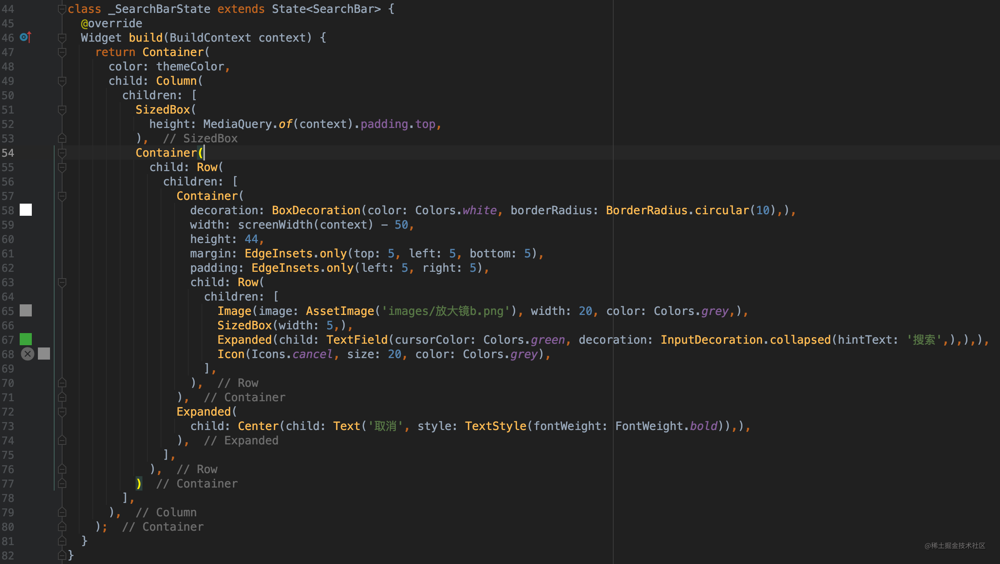
SearchBar 事件处理
取消的处理
点击取消需要 pop 到上一个界面，给取消加一个 GestureDetector 实现 onTap 就好了。代码如下：
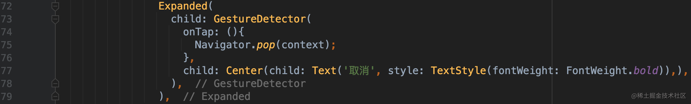
清除按钮功能实现
未输入文本的时候，不显示清除按钮。有输入文本的时候，显示清除按钮。点击清除按钮，清空文本内容并隐藏清除按钮。
使用一个bool值 _showClear 控制清除按钮的显示隐藏。代码如下：
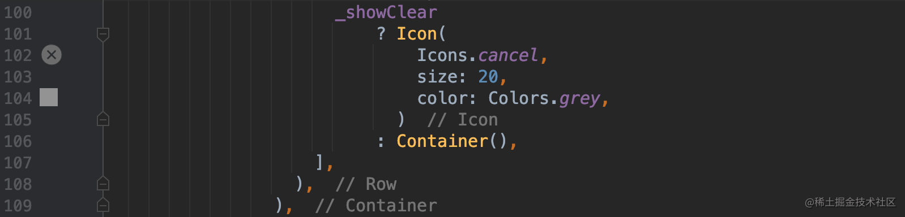
在文本变化的时候，修改 _showClear 值并刷新状态。文本的变化在TextField的 onChanged 属性就可以监听到。代码如下：
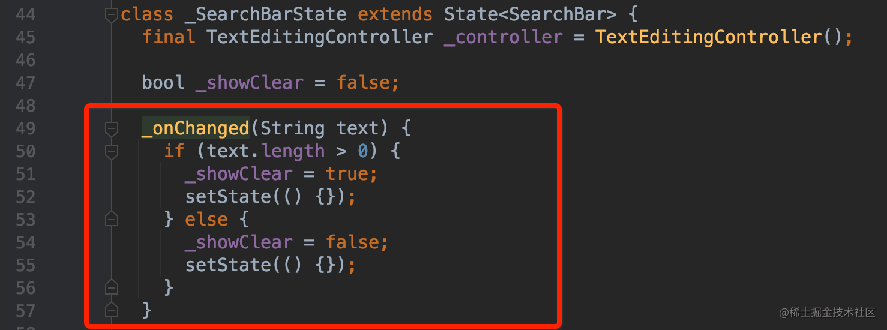
最后就是清除按钮的点击功能，由于需要清空 TextField 的文本内容，需要使用到 TextEditingController,给 TextField 的 controller 属性赋值，然后通过 TextEditingController 对象清除文本内容。文本清除之后并不会自动调用系统的 onChanged 方法，自己手动调用一下就好了。代码如下：
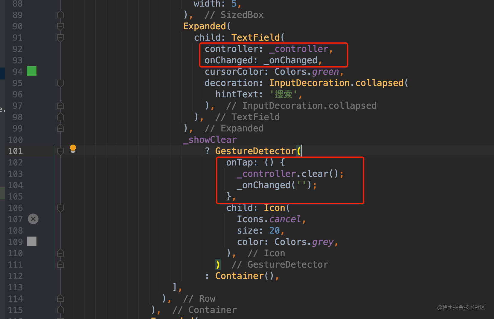
SearchBar 回调文本框的内容
文本框的内容变化的时候，需要回调给 SearchBar 外部，这样我们才能在 SearchPage 页面进行搜索内容。使用一个回调作为参数就可以实现了。代码如下：
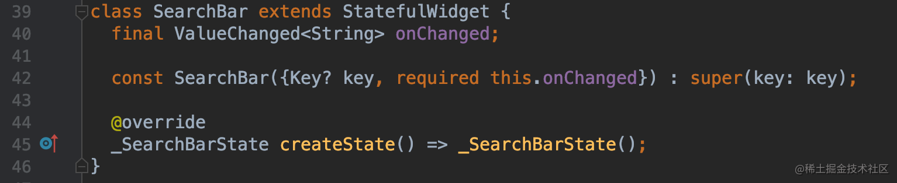
onChanged 是一个闭包属性，在初始化 SearchBar 的时候传入，在 TextField 的文本变化的时候调用闭包，并将文本作为参数回传给 SearchBar 外部。因为将 onChanged 作为了必传参数，所以编译器自然会在用到了 SearchBar 的地方报错。很容易找到报错的地方，加个参数就好了。
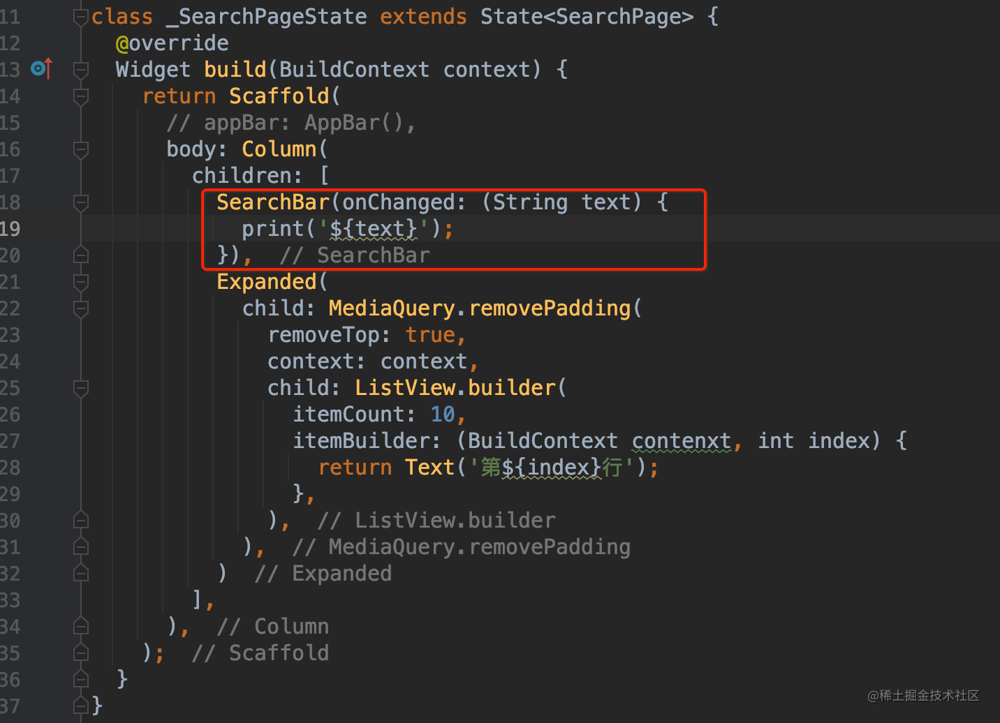
SearchBar 相关的代码就算差不多完成了，其实可以将 SearchBar 单独作为一个文件独立出来。接下来就是处理 SearchPage 了
实现 SearchPage
搜索页面的搜索功能，往细了说，可以搜索很多内容，我们这里只是简单的搜索名字，只要名字包含输入的内容，就将搜索结果展示出来。由于这里对中文名进行搜索的时候，能匹配到的数据比较少，所以这里已经将网络请求返回的名字由中文改为英文名字了。前面展示中文名字的截图就不做修改了。
SearchPage 的搜索功能
添加 datas 数据源
要实现 SearchPage 的搜索功能，那么它首先必须要有数据源，很明显它的数据源是从首页来的。先定义一个 datas,作为必传参数，然后通过外部层层传递过来。
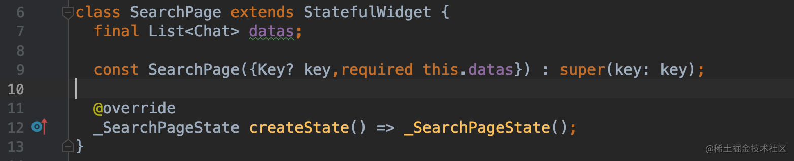
datas 定义好了以后，报红色错误的地方，就是需要传参数的地方，很方便，都不用我们自己去翻哪里需要加参数了。发现 SearchCell 里面需要传入数据源，同样的方式，在 SearchCell 里面定义 datas,然后在报错的地方处理。
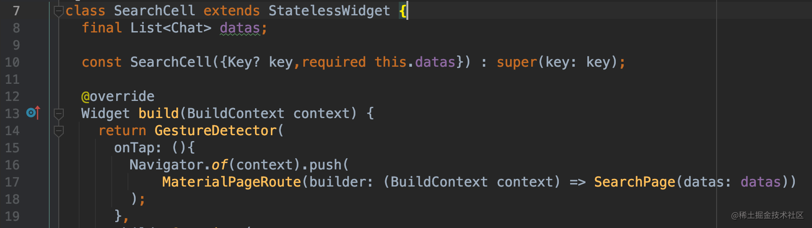
就这样子顺藤摸瓜，直到来到 chat_page 将数据源传入就完成了
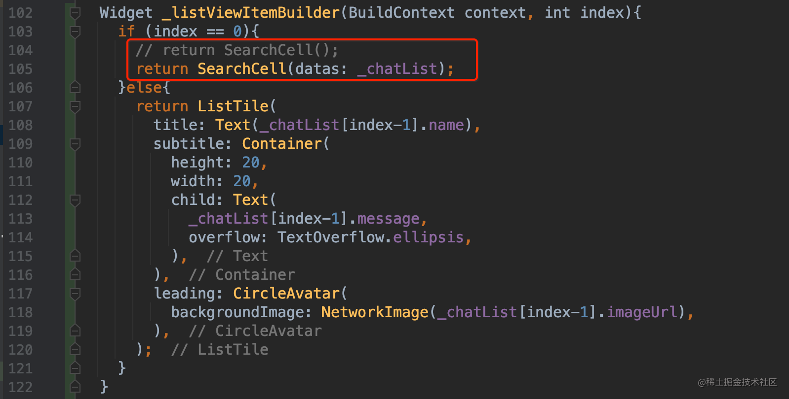
SearchPage 自己的数据源
SearchPage 需要展示搜索之后的结果，所以自己定义一个数组用来存放搜索的结果。并且暂时先使用 Text 做一个最简单的展示。代码如下：
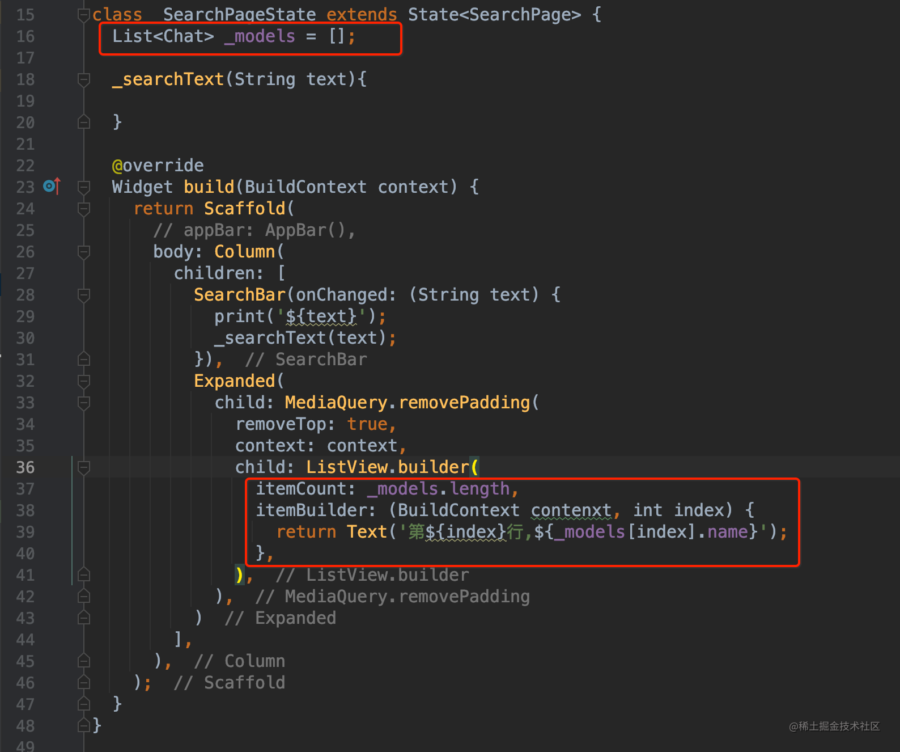
实现搜索功能并展示数据
搜索的功能实现很简单，就是判断数据源里面的名字是否包含输入的文本，如果包含就全部添加并展示。
代码如下：
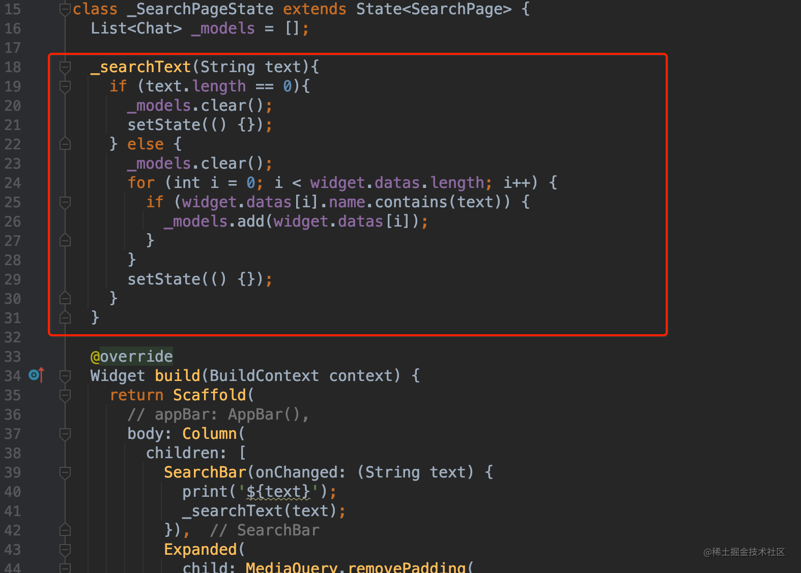
APP 上如图，我输入 son，显示结果：
SearchPage 的搜索结果列表展示
SearchPage 的搜索结果列表展示的数据样式，应该和首页是类似的。所以可以直接使用首页的布局。代码如下：
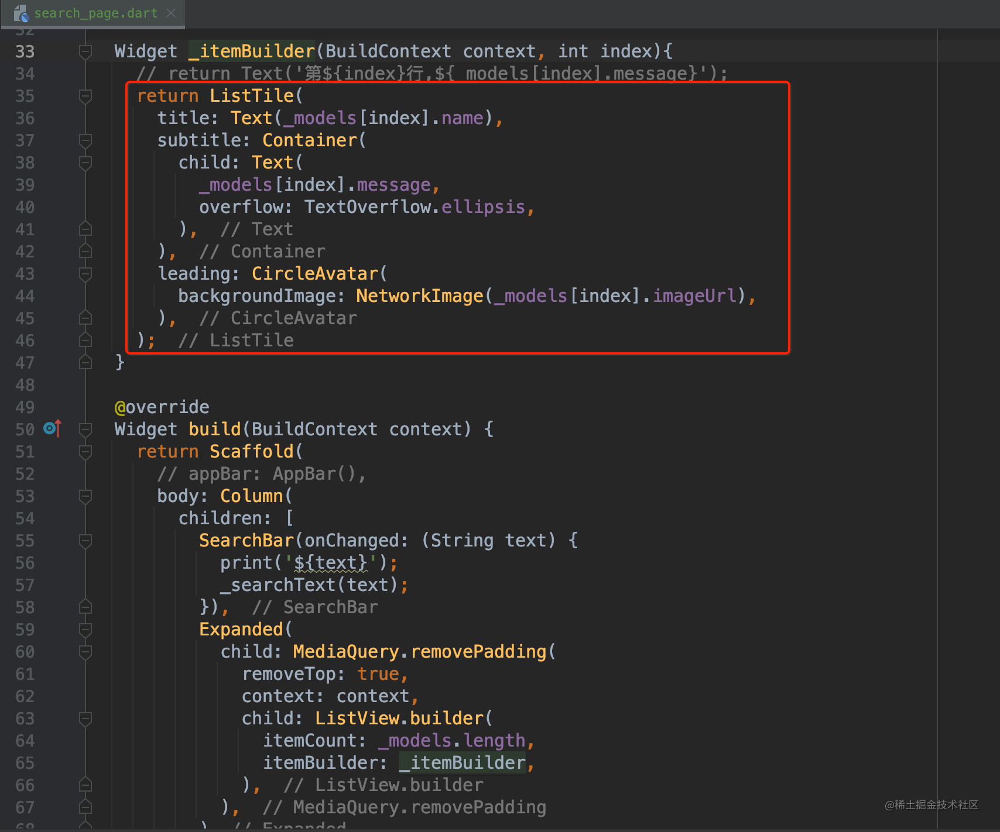
SearchPage 高亮显示搜到的结果
这里的思路是，高亮显示搜到的结果，那么普通的文本肯定是不行了，必须是富文本。如何找到搜索的关键字在文本中的位置呢，这个不用我们考虑了。flutter 中对字符串有一个分隔方法 split,这个方法跟 iOS 中的字符串的 componentsSeparatedByString: 方法类似，根据传入的参数来分隔字符串。这里贴一下 iOS 的代码：
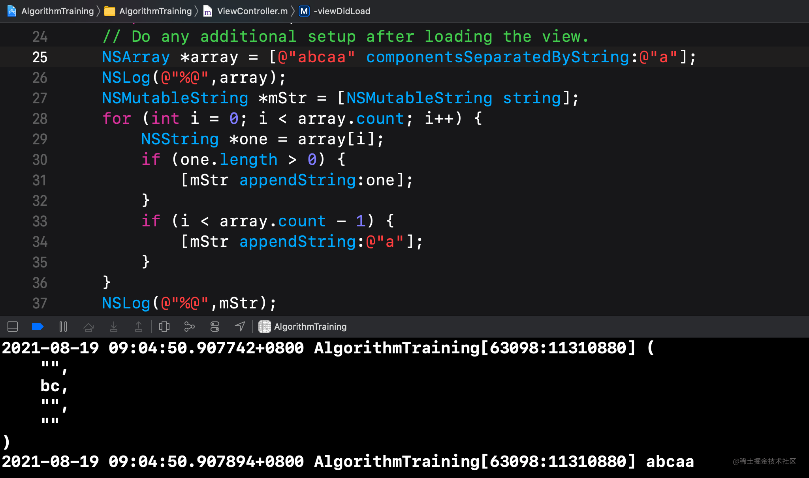
（还是Xcode看着顺眼啊）我们将字符串 abcaa 以字符 a 分组，再将分组的结果拼接回原来的字符串。为什么要这么操作？因为重新拼接新字符串的时候，我们就可以处理富文本字符串了。现在回到 flutter 中来，flutter 中拼接的富文本的方式太方便了，RichText 花样拼接 TextSpan 这个我们在前面也讲过了。
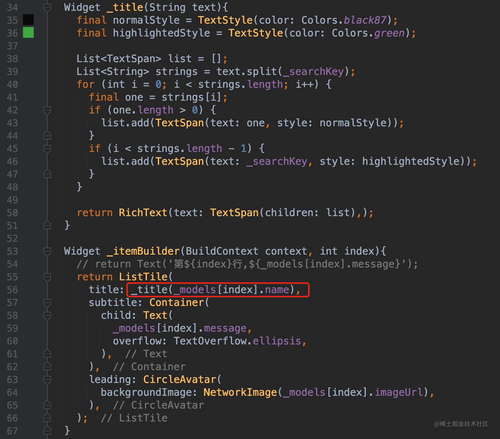
_searchKey 就是我们输入的文本，在 SearchPage 中声明属性，在 SearchBar 的回调中赋值就好了。
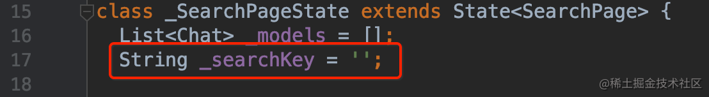
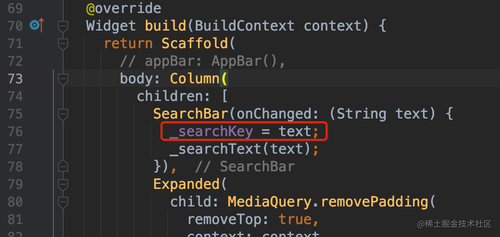
现在测试一下，输入 son，APP 显示如图：
滚动列表叫回键盘
ListView 的滚动，我们在前面已经说过一次，需要将 ListView 包在 NotificationListener 里面。然后叫回键盘的代码 FocusScope.of(context).requestFocus(FocusNode()); 这个记住就好了，代码如下：
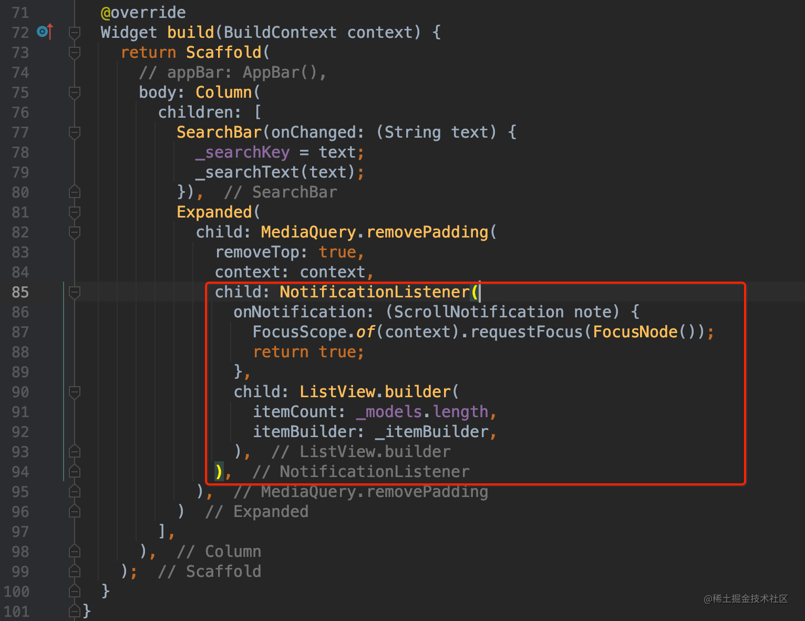
总结
到这里我们的 flutter 仿微信 Demo 功能就差不多完了，还剩最后一篇就是介绍 flutter 和原生混合开发的一些东西。这个也是实际项目中应该经常会遇到的情况。其实写到这里会发现很多东西和原生都是相通的或者类似的。除了新的语言 Dart 不是很熟悉之外，其他很多地方比如很多属性的名字，颜色，闭包，都能够看到原生的影子。flutter 创造者们也不会闭门造车，都会去借鉴原生里面的东西。